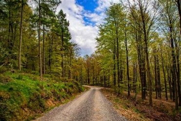
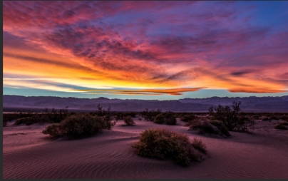

About This Page
This is a simple HTML page that demonstrates the basic structure of an HTML document. It includes a header, main content section, and a footer, as well as some basic styling using CSS.
HTML (Hypertext Markup Language) is the standard markup language for documents designed to be displayed in a web browser. It defines the structure and content of web pages, while CSS (Cascading Style Sheets) is used to style and layout the elements.
Nature Photography
Below are some beautiful nature images. .


Photography helps us appreciate the beauty of nature and reminds us of the importance of preserving our environment for future generations. Whether it's majestic mountains or beautiful oceans, natural landscapes can inspire us and bring peace to our busy lives.